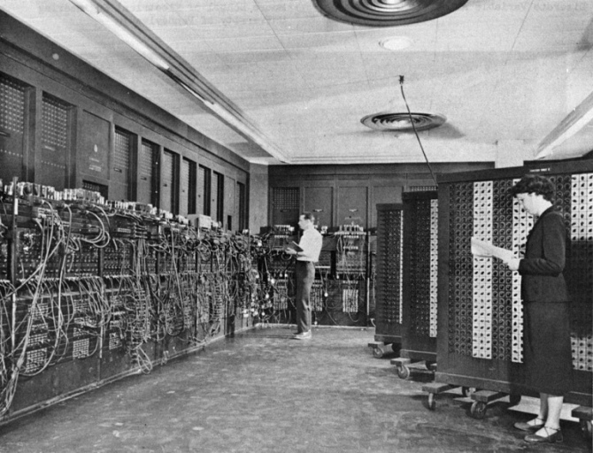
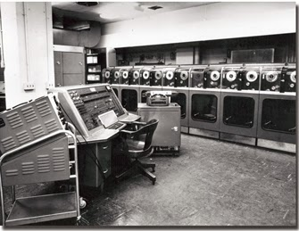
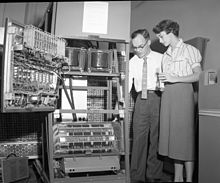
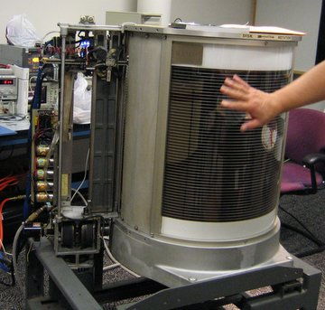
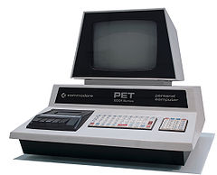
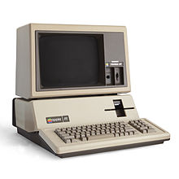
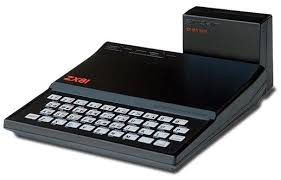

| Data | Wydarzenie | Zdjęcie |
|---|---|---|
| 1945 | Eniac - pierwszy komputer lampowy który zajmował 167 m2 powierzchni Komputer zajmował 167 m2 powierzchni, składał się z 42 szaf z blachy stalowej, sięgał ponad 2,4 metra wysokości i 24 metry długości Jego łączna waga przekraczała, 27 ton. Do jego budowy użyto 17468 lamp elektronowych, 1500 przekaźników, 70 000 oporników i 10 000 kondensatorów. Pobór mocy w trakcie pracy urzadzenia wynosił 174 kilowatów. |
 |
| 1951 | Univag - pierwszy na świecie elektroniczny komputer ogólnego przeznaczenia Pierwszy komercyjny komputer, zainstalowany w amerykańskiej instytucji zajmującej się spisami ludności. |
 |
| 1953 | IBM - 650 Pierwszy komputer, który trafił do masowej produkcji |
 |
| 1956 | IBM - RAMAC Pierwszy dysk twardy o pojemności 5 MB |
 |
| 1967 | Texas Instruments produkuje na potrzeby armii pierwszy komputer oparty na układach scalonych z pamięcią półprzewodnikową. |
|
| 1973 | Naukowcy z Xerox PARC opracowują eksperymentalny komputer PC. Używa on myszy, sieci Ethernet i graficznego interfeju użytkownika. |
|
| 1974 | Powstaje 8 bitowy procesor 8080 (2 Mhz). Składa się z 6 tys. tranzystorów. | |
| 1977 | Commodore Business Machines prezentuje komputer PET 2001 z procesorem 6502, 4KB RAM, 14KB ROM, klawiatura, monitorem i magnetofonem. |
 |
| 1980 | APPLE tworzy APPLE III. Na rynek wchodzi firma ATARI z modelami 400 i 800 ze specjalizowanym ukladem dzwiękowym POKEY oraz nowoczesną 256 kolorową grafiką, dysk twardy Seagate. Powstaje język programowania Ada. Wayne Ratliff pisze dBase II, pierwszą wersję bazy danych na komputery PC. IBM wybiera PC-DOS Microsoftu, jako swój system operacyjny stosowany w komputerach PC. Sinclair Research przedstawia komputer ZX80, wykorzystujący 8-bitowy procesor NEC 3,25 Mhz i mający 1 Mb RAM oraz 4KB ROM. W czerwcu Seagate Technologies prezentuje dysk Winchester 5,25 cala. Używa on czterech talerzy i ma 5 MB pojemności.. |  |
| 1981 | Na rynek wchodzi komputer domowy Sinclair ZX81. IBM prezentuje pierwszy komputer z serii IBM PC z systemem Microstfo MS DOS 1.0; COMMODORE wprowadza model VIC-20. |  |